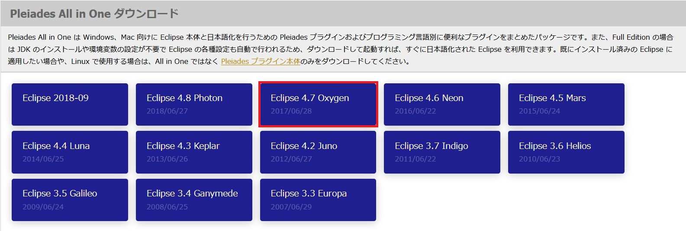
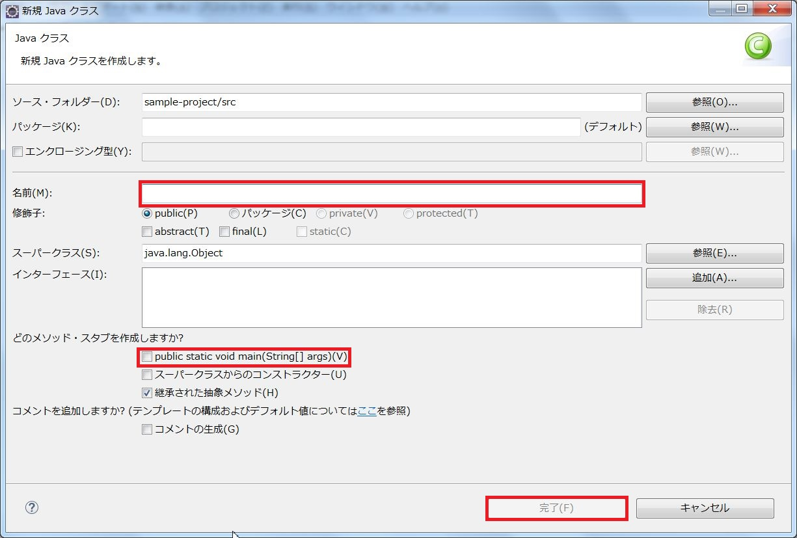

Javaの環境構築手順を解説します。Javaには開発環境（JDK）と実行環境（JRE）があり、Javaアプリケーションを実行するだけであればJREのみで動作させることが可能ですが、JDKはJavaの基本ライブラリなどを含んでおり、Javaで開発を行うには必須になります。これらは別々にインストールすることも可能ですが、JDKのインストール時にJREも同時にインストールすることが可能となっていますので、ここではJDKのインストール手順を解説していきます。
JDKはこちらから入手してください。2018年10月時点での最新版はJava11となっていますが、本記事ではJava10のダウンロードとインストール手順を解説します。ダウンロード・インストールの手順についてはバージョンによる違いはありませんので、Java10以外のバージョンをインストールしたい場合は適宜読み替えてください。
JDKのダウンロードボタンをクリックします。
「Accept License Agreement」にチェックした後にダウンロードリンクをクリックします。お使いのブラウザによって挙動が異なりますが、任意の場所へのダウンロードが開始されます。ダウンロードが完了したら次のステップに進みます。
執筆中
多くのプログラミング言語ではコンパイラやテキストエディタなどが一体となった統合開発環境（IDE）が提供されています。JavaにおけるIDEはEclipseとNetBeansが双璧といえる存在ですが、本記事ではシンプルさや普及度などを評価してEclipseを使うこととします。Eclipse本体は英語版のみになりますが、有志の技術者によって日本語翻訳版パッケージ（Pleiades）が提供されていますので、こちらを利用します。MergeDocプロジェクトトップページより入手できます。
2018年10月時点では「Eclipse 2018-09」というバージョンが最新版ですが、本記事では「Eclipse 4.7 Oxygen」を利用します。Eclipseのバージョンによる違いは主に対応しているJDKのバージョンの違いですから、4.8であっても2018-09であっても同様の手順です。Eclipse 4.7 Oxygenと書かれた青いボックスをクリックしてください。
表示された画面で、JavaのWindows64bit版Standard Editionをダウンロードします。Full EditionはJDK及びこの後説明するTomcatの同梱版になります。JDKについては既にインストール済みですので、今回はStandard Editionをダウンロードしてください。
ZIPファイルがダウンロードされますので、これを任意の場所に解凍します。（本記事ではCドライブ直下に解凍したものとして解説します。）EclipseはZIPファイルを解凍すればそのまま起動可能になります。（インストール不要）早速、Eclipseを起動してみましょう。
ワークスペースの選択画面が表示されます。ワークスペースとはEclipseで作成したJavaのソースコードなどが保存される場所と思っておけば間違いありません。特に変更する必要はありませんので、デフォルトのままで「この選択をデフォルトとして・・・・」にチェックを入れて、起動ボタンをクリックしてください。チェックを入れ忘れても問題はありませんが、チェックをつけないまま起動すると、次回以降もEclipseを起動するたびにワークスペースの選択画面が表示されてしまいますので、気付いたときにチェックを付けておきましょう。
正常に起動して上記のような画面が表示されればOKです。次のステップに進みます。
Eclipseの初期設定を行います。上部メニューからウィンドウ→設定をクリックしてください。以下のような画面が表示されます。
Java→コンパイラーを選択するとコンパイラーの設定画面が表示されます。コンパイラーの準拠レベルを10としてください。
設定したら適用して閉じるボタンをクリックします。
Eclipseでは「プロジェクト」という単位でソースコードを管理しています。Eclipseで作成するJavaのソースコードは必ず何らかのプロジェクトに属するということになります。上記のようなコンパイラーの設定などはワークスペース単位で設定することもできますし、プロジェクト単位で個別に設定することも可能となっています。
プロジェクトを作成して実際にJavaプログラムを実行してみます。上部メニューよりファイル→新規→Javaプロジェクトを選択してください。以下のようなプロジェクトの設定ダイアログが表示されます。
プロジェクト名に任意の名前を入力して完了ボタンをクリックしてください。Javaプロジェクトの雛形が作成されます。デフォルトではプロジェクト名の付いたフォルダ（これをプロジェクトルートといいます）の直下にsrcフォルダができていると思います。
これはソースフォルダという特殊なフォルダで、Eclipseはこのソースフォルダ内に格納されたJavaソースファイルをコンパイルの対象としています。従って、新たにJavaのソースファイルを作成する際には、このソースフォルダ配下に作成することになります。それでは、新規でJavaソースファイルを作成してみましょう。
新規でJavaソースファイルを作成する場合は、新規Javaクラスのアイコンをクリックします。アイコンの右隣にある下向きの三角形をクリックすると、Javaクラス以外のソースファイルを作成することもできます。ここではクラスを選択してください。
Javaクラスを選択するとJavaクラスの新規作成ダイアログが表示されます。クラス名を入力し、public static void main....にチェックを入れて完了をクリックします。ここではクラス名を「Sample」として解説します。クラスを作成するとmainというメソッドを持ったJavaクラスが生成されます。このmainメソッドはJavaプログラムにおけるエントリポイントで、全てのJavaプログラムは必ずmainメソッドから起動されます。このmainメソッド内に以下のように記述してください。
System.out.println("Hello World.");
Alt + Shift + Xを同時押しした後に、Jを押下することでJavaプログラムを起動することができますので起動してみてください。Eclipseのコンソールが起動されて以下のように表示されればOKです。
これでJavaの開発環境が整いました。次回はWebアプリケーションの仕組みについてのお話です。
Javaにはパッケージという概念が存在します。これはVB.NETやC#における名前空間に類似するもので、同じクラス名でもパッケージが異なれば別のクラスとして扱われます。パッケージ名の命名に厳密なルールはありませんが、自社のドメイン名を用いることによってクラス名の衝突を防ぐことが推奨されています。またパッケージ名として用いるドメイン名は慣例的に後方からピリオドで繋いだ形が用いられます。例えばアルティマークのドメイン名はultimark.co.jpですから、アルティマークで作成するJavaクラスのパッケージ名はjp.co.ultimarkから始まることになります。
また、パッケージ名はドメイン名.プロジェクト名.サブプロジェクト名（サブシステム名）というように大まかに分割して管理するのが一般的です。